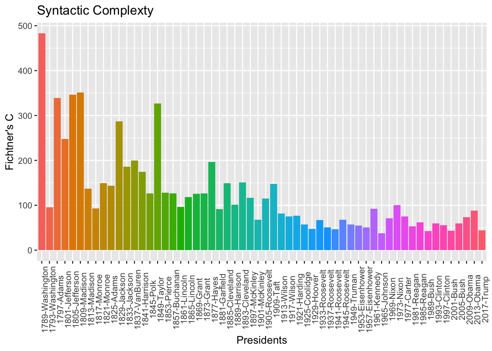
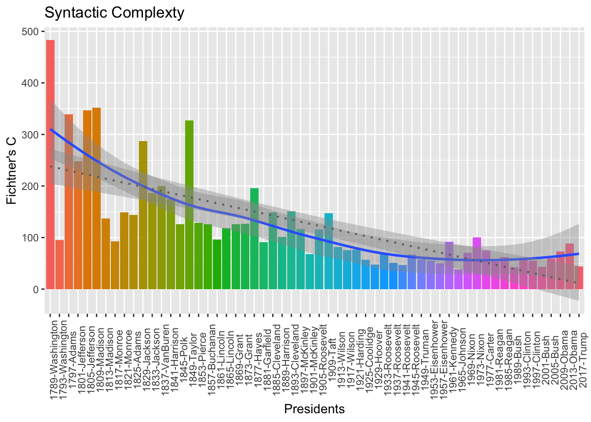

Chapter 5 Parts-of-Speech Tagging
In many textual analysis, word classes can give us additional information about the text we analyze. These word classes typically are referred to as parts-of-speech tags of the words. In this chapter, we will show you how to POS tag a raw-text corpus to get the syntactic categories of words, and what to do with those POS tags.
In particular, I will introduce a powerful package spacyr, which is an R wrapper to the spaCy “industrial strength natural language processing” Python library from https://spacy.io. In addition to POS tagging, the package provides other linguistically relevant annotations for more in-depth analysis of the text.
5.1 Installing the Package
Please consult the spacyr github for more instructions on installing the package.
There are at least four steps:
Install miniconda (or any other conda version for Python)
Install the
spacyrR package
install.packages("spacyr")- Because
spacyris an R wrapper to a Python pacakge, you need to have Python installed in your OS system as well. The easiest way to install spaCy and spacyr is through the spacyr functionspacy_install(). This function by default creates a new conda environment calledspacy_condaenv, as long as some version of conda is installed on the user’s the system. (spacyruses Python 3.6.x and spaCy 2.2.3+)
library(spacyr)
spacy_install(version='2.2.3')The spacy_install() will create a stand-alone conda environment including a python executable separate from your system Python (or anaconda python), install the latest version of spaCy (and its required packages), and download English language model.
If you don’t have any conda version installed on your system, you can install miniconda from [https://conda.io/miniconda.html]https://conda.io/miniconda.html. (Choose the 64-bit version, or alternatively, run to the computer store now and purchase a 64-bit system to replace your ancient 32-bit platform.) Also, the spacy_install() will automatically install the miniconda (if there’s no conda installed on the system) for MAC users. Windows users may need to consult the spacyr github for more important instructions on installation.
For Windows, you need to run R as an administrator to make installation work properly. To do so, right click the RStudio icon (or R desktop icon) and select “Run as administrator” when launching R.
- Initializing spaCy in R
5.2 Quick Overview
The spacyr provides a useful function, spacy_parse(), which allows us to parse an English text in a very convenient way.
txt <- c(d1 = "spaCy is great at fast natural language processing.",
d2 = "Mr. Smith spent two years in North Carolina.")
parsedtxt <- spacy_parse(txt,
pos = T,
tag = T,
lemma = T,
entity = T,
dependency = T)
parsedtxtThe output parsedtext is a data frame, which includes annotations of the original texts at multiple granularities.
- All texts have been tokenized into words with each word, sentence, and text given an unique ID (i.e.,
doc_id,sentence_id,token_id) - Lemmatization is also done (i.e.,
lemma) - POS Tags can also be found (i.e.,
posandtag)pos: this column uses the Universal tagset for parts-of-speech, a general POS scheme that would suffice most needs, and provides equivalencies across languagestag: this column provides a more detailed tagset, defined in each spaCy language model. For English, this is the OntoNotes 5 version of the Penn Treebank tag set.
- Depending on the argument setting for
spacy_parse(), you can get more annotations, such as named entities (entity) and dependency relations (del_rel).
5.3 Parsing Your Text
Now let’s use this spacy_parse() to analyze the presidential addresses we’ve seen in Chapter 4: the data_corpus_inaugural from quanteda.
To illustrate the annotation more clearly, let’s parse the first text in data_corpus_inaugural:
We can parse the whole corpus collection as well: we first apply the spacy_parse to each text in data_corpus_inaugural using map() and then rbind() individual resulting data frames into one using do.call().
## user system elapsed
## 12.958 1.099 14.056Before we move on, we need to clean up the doc_id column of corp_us_words.
corp_us_words into one as provided below?
5.4 Metalingusitic Analysis
Now spacy_parse() has enriched our corpus data with more linguistic annotations. We can now utilize the additional tags for more analysis.
In many applied linguistics studies, people sometimes look at the syntactic complexity of the language across a particular factor. For example, people may look at the syntacitc complexity development of L2 learners of varying proficiency levels, or of L1 speakers in different acquisition stages, or of writers in different genres (e.g., academic vs. nonacademic).
To operationalize the construct sytactmic complexity, we use a simple metric, Fichtner's C, which is defined as:
\[ Fichtner's C = \frac{Number\;of\;Verbs}{Number\;of\;Sentences} \times \frac{Number\;of\;Words}{Number\;of\;Sentences} \]
Now we can take the corp_us_words and first generate the frequencies of verbs, and number of words for each presidential speech text.
syn_com <- corp_us_words %>%
group_by(doc_id) %>%
summarize(verb_num = sum(pos=="VERB"),
sent_num = max(sentence_id),
word_num = n()) %>%
mutate(F_C = (verb_num/sent_num)*(word_num/sent_num)) %>%
ungroup
syn_comWith the syntactic complexity of each president, we can plot the tendency:
syn_com %>%
ggplot(aes(x = doc_id, y = F_C, fill = doc_id)) +
geom_col() +
theme(axis.text.x = element_text(angle=90)) +
labs(title = "Syntactic Complexty", x = "Presidents", y = "Fichtner's C") +
guides(fill = F)
It’s interesting to see a decreasing trend in syntactic complexity!

5.5 Construction Analysis
5.6 Saving POS-tagged Texts
We may very often get back to our corpus texts again and again when we explore the data. In order NOT to re-tag the texts every time when we process the data, it would be more convenient if we save the tokenized texts with the POS tags in the hard drive. Next time we can import those files without going trough the POS-tagging again.
However, when saving the POS-tagged results to an external file, it is highly recommended to keep all the tokens of the original texts. That is, leave all the word tokens as well as the non-word tokens intact.
A few suggestions:
- If you are dealing with a small corpus, I would probably suggest you to save the resulting data frame from
spacy_parse()as a csv for later use. - If you are dealing with a big corpus, I would probably suggest you to save the parsed output of each text file in an independent csv for later use.
5.7 Finalize spaCy
While running spaCy on Python through R, a Python process is always running in the background and Rsession will take up a lot of memory (typically over 1.5GB). spacy_finalize() terminates the Python process and frees up the memory it was using.